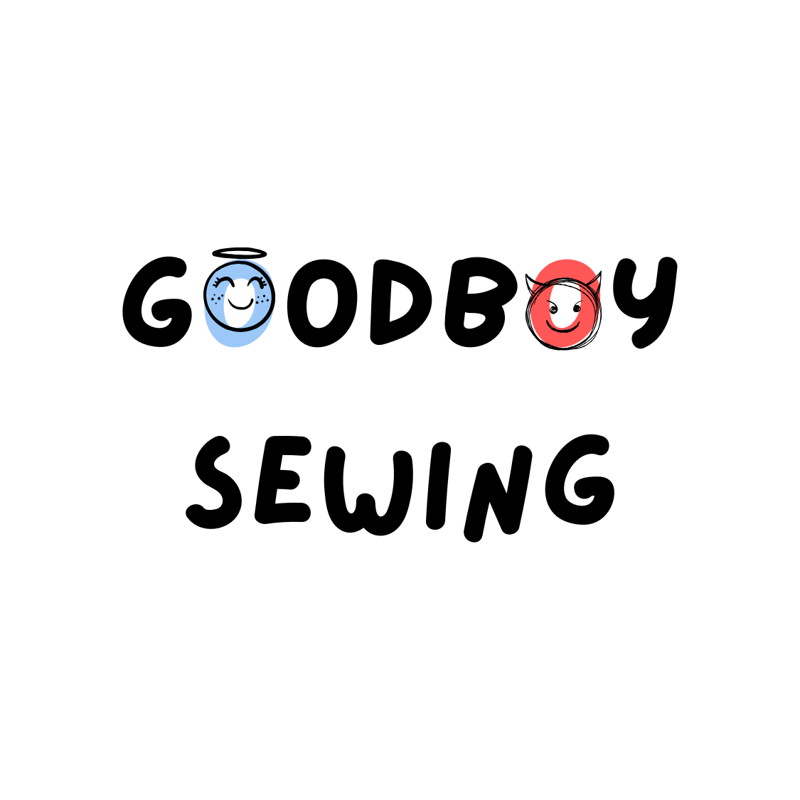
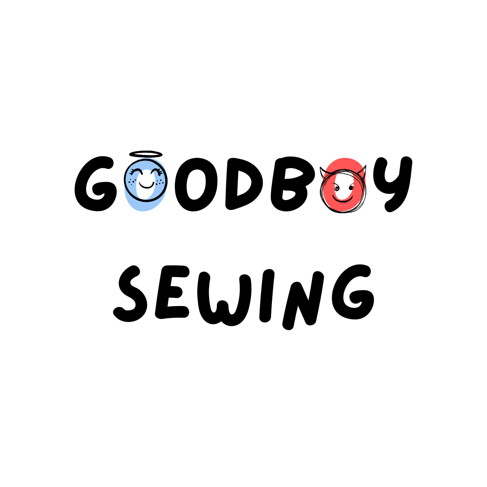

As a gay Asian-American born designer from St.Paul, Minnesota, Dmitri Moua explores queerness, movement and shape, influenced by his involvement in dance, music, theater and the arts. From a young age Moua found the act of creating and sharing his vision as an outlet to express himself. He often combines streetwear with performance wear to create functional pieces that can be worn day and night.
“Strictly Business” is a flirtatious queer take on the traditionally masculine and rigid formal wear of businessmen. This collection by goodboysewing, targets the youthful and creative business professionals that know how to work hard and play hard. It blends western business elements–such as collared shirts, tailored silhouettes and pinstripes–with influences of comfortable performance wear, japanese streetwear and queer nightlife. A key component to this collection is the androgynous ability to mix, match and layer different garments. By allowing this customizability one can be sexy or modest, snatched or oversized, formal or casual depending on the day and its activities. Patrons of goodboysewing can go from the bed to the farmers market, from the office to the couch and from a club to the bathroom floor and all over again.